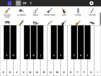

Music Keyboard¶

About¶
This activity display a piano keyboard in the screen and can be used to play music selecting sounds from different instruments. In devices with touch screen, can be used touching the screen, in devices without one, the laptop keyboard can be used.
The piano widget trigger events for every key pressed/released, and is designed to be easily included in other activities.
How to use Music Keyboard¶
By clicking on the small “Q” at the top of the screen, the user can set the on-screen keyboard to show the letters and numbers of the corresponding notes on the QWERTY keyboard. This is very helpful for XOs without a touch screen. It should help eliminate the confusion children who have had piano lessons encounter when, for example, the Qwerty C key plays the musical note of E or the Qwerty B key plays the musical note of G. Users can easily see the Qwerty keyboard relationship with this version running.
Clicking on the next button, “DO,” makes the keyboard show the solfége syllables as used in most Latin American countries and some European countries, where the 7th note in the scale is sung as “SI.”
For countries, such as the USA and and some European countries where the 7th note is sung as “Ti”, you simply click on the “TI” button!
Of course, some people will want the letter names of the notes, and clicking on the “C” button will magically switch to the letter names of the notes.
Finally, for purists (best on a touch screen) all note names can be eliminated by clicking on the “X,” giving just a plain, standard keyboard.
Other small, but important details are the inclusion of the enharmonic names of the “black” keys, for example, A# and Bb are both marked on the same key because, on a keyboard, they sound exactly the same.
Thirty-three instruments are available for choice, and while they don’t sound exactly like the instruments they represent, they are close enough to make it interesting to try different sounds.
Download¶
References¶
Repositories¶
Note the master branch in the Tam Tam repository is where the port to Gtk3 started, but is not finished. If you want generate a usable activity, should use the branch sugar-0.94